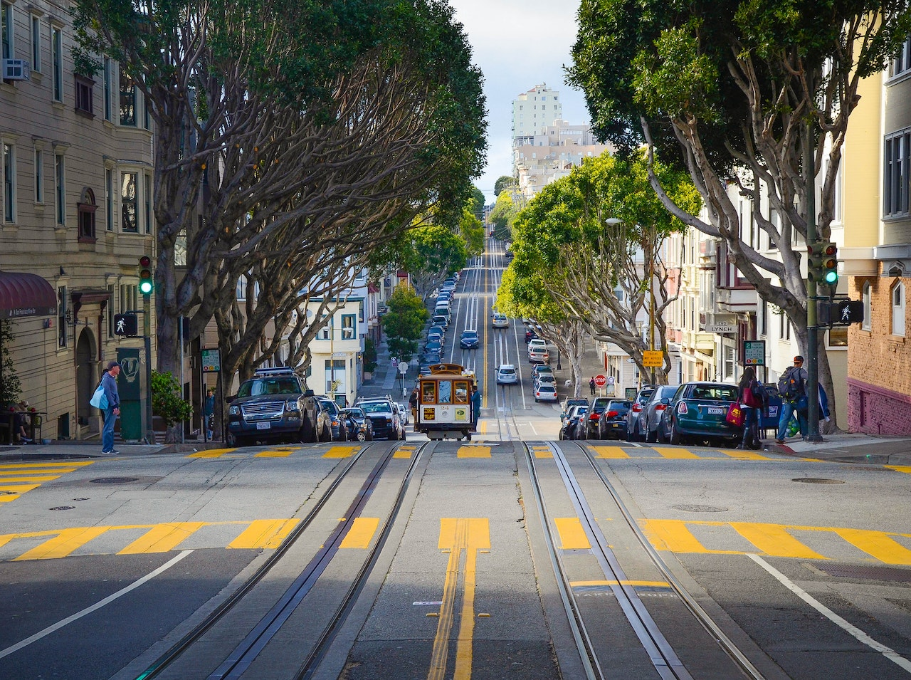
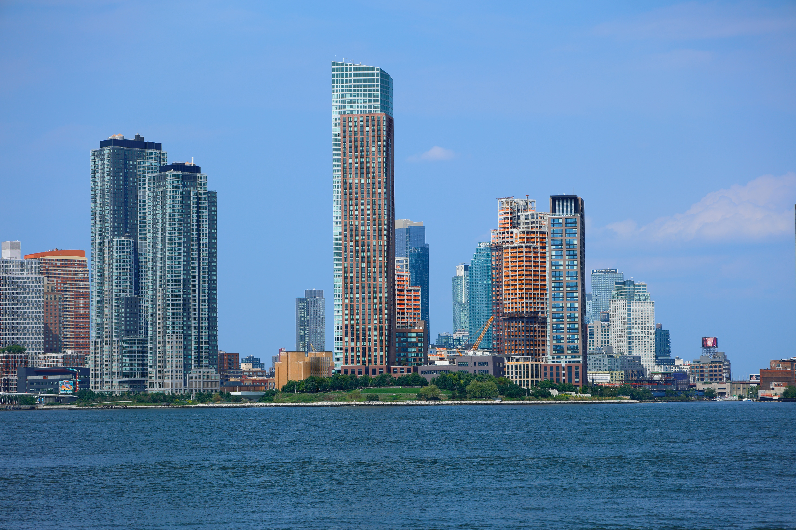
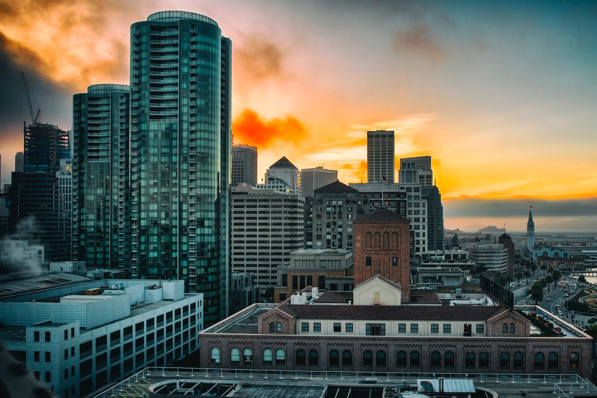

S√£o Jos√©, California üìç
Bem-vindo a São José, Califórnia, o cenário cativante que acolhe a Apple Worldwide Developers Conference (WWDC) a cada ano. Esta cidade diversificada e vibrante é o local perfeito para um evento que celebra a inovação tecnológica e reúne mentes brilhantes de todo o mundo.

Vale do Silício
São José, situada no coração do Vale do Silício, é conhecida como um dos principais centros de tecnologia e inovação do planeta. Com seu clima agradável, parques deslumbrantes e uma cena cultural efervescente, a cidade oferece uma experiência enriquecedora para os participantes da WWDC. Explore o histórico Downtown San Jose, que abriga restaurantes, lojas e atrações culturais, proporcionando um ambiente perfeito para networking e interação entre os desenvolvedores.

McEnery Convention Center

O local principal da WWDC é o McEnery Convention Center, um centro de convenções de renome internacional localizado no coração de São José. Este espaço moderno e bem-equipado serve como o epicentro das atividades da WWDC, onde as palestras inspiradoras, sessões práticas e oportunidades de aprendizado acontecem. Com instalações de última geração e um ambiente propício à colaboração e à criatividade, o McEnery Convention Center é o lugar perfeito para explorar as inovações tecnológicas da Apple.
